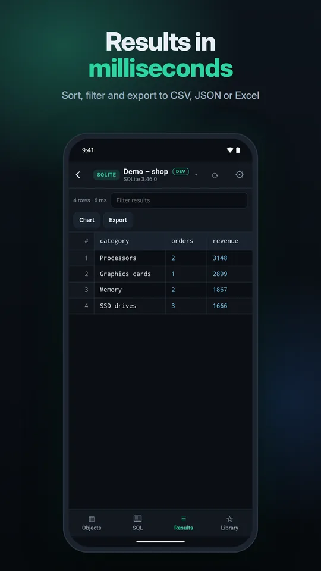
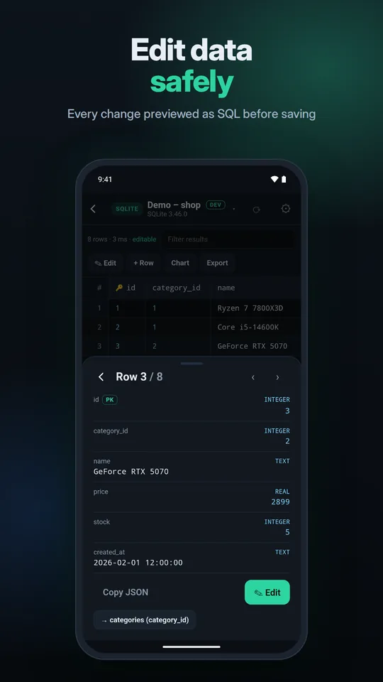
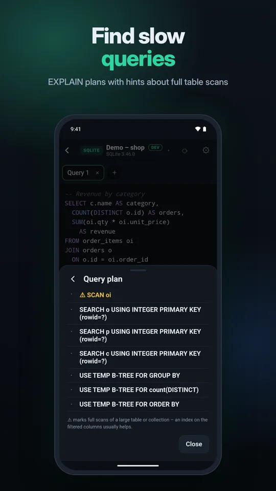

Twoje bazy danych.
W kieszeni.
Połącz się z PostgreSQL, MySQL, SQL Server, Oracle, Snowflake, MongoDB, Redis i ponad 20 innymi bazami. Pisz SQL, przeglądaj tabele i poprawiaj dane z telefonu – a na Samsung DeX masz pełne środowisko jak na komputerze.
- ✓ Bez konta
- ✓ Bez reklam i śledzenia
- ✓ Hasła w Android Keystore

Wszystko, czego potrzebujesz do pracy z bazą – na telefonie
Edytor SQL
Kolorowanie składni, podpowiedzi tabel i kolumn nad klawiaturą, formatowanie, karty, historia i szablony.
Siatka danych
Sortowanie, filtrowanie, eksport do CSV / JSON / Excela. Edycja wierszy z podglądem SQL przed zapisem.
Wykresy
Każde zapytanie jako wykres słupkowy lub liniowy jednym stuknięciem.
Diagram ER i EXPLAIN
Cały schemat na jednym ekranie i czytelne plany zapytań.
Bezpiecznie na produkcji
Znaczniki DEV / TEST / PROD, tryb tylko do odczytu, potwierdzanie zmian, blokada odciskiem palca.
Komputer na DeX
Podłącz monitor i pracuj w układzie trzech paneli: nawigator, edytor, szczegóły.
Ponad 20 baz danych i chmur
Zrzuty ekranu







Wersja darmowa i Pro
Wykonywanie SQL, przeglądanie i edycja tabel, wszystkie silniki baz i układ desktopowy są za darmo. Pro – jednorazowo albo w subskrypcji miesięcznej – odblokowuje nielimitowane połączenia, karty i historię, tunel SSH, diagram ER, EXPLAIN, porównanie schematów, import i wszystkie formaty eksportu.
Poradniki (EN)
Connect to a private database from your phone with an SSH tunnel
Step-by-step: reach a PostgreSQL, MySQL, SQL Server or Oracle database inside a private network from Android using an SSH tunnel through a bastion host.
Your phone as a desktop SQL IDE (Samsung DeX, USB-C)
Use an Android phone as a desktop SQL IDE: connect it to a monitor with Samsung DeX or USB-C and TivaroSQL Studio switches to a three-pane layout with navigator, editor and details.
Najczęstsze pytania
Czy TivaroSQL Studio jest darmowe?
Tak. Aplikację pobierasz za darmo, a podstawowe funkcje są bezpłatne. Pro jest opcjonalne.
Jakie bazy są obsługiwane?
PostgreSQL, MySQL, MariaDB, SQL Server, Oracle, SQLite, DuckDB, ClickHouse, Snowflake, Turso, MongoDB, Redis, Cassandra oraz zgodne usługi chmurowe: Neon, Supabase, PlanetScale, Azure SQL, Amazon RDS.
Czy moje dane przechodzą przez Wasze serwery?
Nie. Telefon łączy się bezpośrednio z wybraną bazą. Nie ma konta, analityki ani śledzenia.
Czy to bezpieczne na produkcji?
Oznacz połączenie jako PROD (potwierdzenie każdej zmiany), włącz tryb tylko do odczytu i blokadę odciskiem palca lub PIN-em.
Jaki jest język aplikacji?
Interfejs jest obecnie po angielsku.